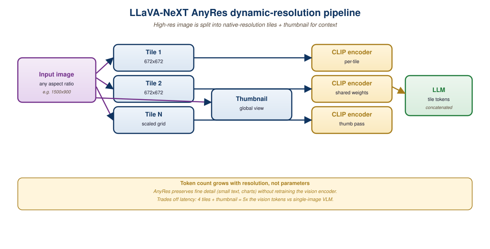

"A vision encoder speaks fluent CLIP. A language model speaks fluent English. The connector module is the bilingual diplomat who never gets credited in the paper title."
A Modality-Bridging AI Agent
A generative Vision-Language Model takes an image plus a text prompt and produces text. The architectural recipe is now well established: a pretrained vision encoder (CLIP or SigLIP) extracts visual tokens, a connector module projects them into the language model's embedding space, and a pretrained LLM generates text autoregressively conditioned on the projected visual tokens. The interesting design choices are at the connector: linear projection (LLaVA), Q-Former (BLIP-2), MLP plus dynamic resolution (LLaVA-NeXT, Qwen-VL). This section walks through the four most influential open-source VLM families and explains how their connector choices affect training cost, image-resolution handling, and downstream accuracy.
Prerequisites
This section assumes familiarity with CLIP and SigLIP from Section 22.2 and with LLM pretraining from Section 6.1. Familiarity with instruction tuning from Section 16.2 helps when reading the LLaVA training-recipe walkthrough.
Before the patch-token VLMs of this section, the dominant recipe for "transformer + image" was very different. VisualBERT (Li et al., 2019) and its contemporaries (LXMERT, ViLBERT, VL-BERT, UNITER) did not feed raw image patches to the transformer. Instead they ran the image through a pretrained object detector first (typically Faster R-CNN with a ResNet-101 backbone, pretrained on Visual Genome) and used the top 36 region-of-interest bounding-box features as image tokens. Each region was represented by a 2048-dimensional vector pooled from the detector's last convolutional layer, then linearly projected to 768 dimensions to match BERT's hidden size. The image, in other words, was tokenized through the output of a separate trained detector, not through a learned patch embedding.
Training combined two losses: masked language modeling (predict masked text tokens given image regions plus surrounding text, exactly as in BERT) and Sentence-Image Alignment (SIA) (a binary classifier on the pooled [CLS] token that predicts whether the caption and image actually match, with negatives sampled from other examples in the batch). Fine-tuning for Visual Question Answering treated the task as closed-vocabulary classification: a vocabulary of about 3,000 answer phrases ("yes", "no", "two", "blue", "umbrella", etc.) was extracted from VQA training data, and a multi-class classifier head on the joint [CLS] embedding picked one. The same recipe extended to open-ended VQA by triplet scoring: for each candidate answer in a set, embed (image regions, question, candidate) jointly and apply a binary classifier head to score "is this candidate the right answer?"; the highest-scoring candidate wins.
This region-feature lineage was state-of-the-art from 2019 through early 2021 and is the reason any modern VLM paper still benchmarks against VQAv2 and GQA: those datasets were built for region-feature VLMs. The pattern was displaced by patch-token VLMs (the LLaVA / BLIP-2 / Qwen-VL line above) for three reasons. First, the detector itself was a bottleneck: any concept absent from Visual Genome's 1600 object classes (a UI button, a chart axis label, an unusual logo) was invisible to the downstream language model. Second, the two-stage pipeline (detector then transformer) could not be jointly fine-tuned without backpropagating through a slow detector. Third, patch tokens trained contrastively (CLIP, SigLIP) carry richer semantics than detector-pooled regions, especially for text-in-image and dense scene understanding. By 2022 the field had quietly switched, and by 2024 VisualBERT-style models had vanished from leaderboards. Knowing the pre-CLIP lineage matters because the closed-vocabulary VQA benchmarks (and their unusual "pick one of 3K phrases" answer space) are inherited from that era. Reference: Li, L. H., et al., "VisualBERT: A Simple and Performant Baseline for Vision and Language," arXiv:1908.03557 (2019).
22.3.1 The Vision Encoder + LLM Connector Pattern
Every generative VLM in 2026 follows the same three-stage data flow. The first stage is the vision encoder: a frozen (or lightly fine-tuned) CLIP or SigLIP ViT consumes the image and produces a sequence of visual tokens (typically 256-1024 tokens, depending on resolution and patch size). The second stage is the connector: a small learned module (parameters ranging from 1M to 200M) projects the visual tokens into the LLM's input embedding space. The third stage is the language model: a pretrained decoder-only transformer (Llama, Qwen, Mistral, Phi, etc.) that consumes the projected visual tokens prepended to the user's text prompt and generates a textual response.
The connector is the architecturally interesting piece because it determines how much computation is spent translating between modalities, how many visual tokens the LLM has to attend to, and how much training data is needed to align the two modalities. Five connector designs have dominated practice, and each represents a different point on the cost-accuracy-flexibility tradeoff.
22.3.2 The LLaVA Recipe: MLP Projection
LLaVA (Liu et al., 2023, with updates LLaVA-1.5 in October 2023 and LLaVA-NeXT in January 2024) introduced the simplest connector that works: a two-layer MLP that projects each visual token directly into the LLM's embedding space. The vision encoder is CLIP-ViT-L/14@336, producing 576 visual tokens. The MLP applies the same projection to every token independently, so the output is also 576 vectors of dimension matching the LLM's hidden size (typically 4096 for Llama-2-7B).
The training procedure is also straightforward. Stage 1 (visual-language alignment, about 1 day on 8x A100) freezes both the vision encoder and the LLM and trains only the MLP connector on 558k image-caption pairs from CC3M and LAION-595M. Stage 2 (visual instruction tuning, about 1 day on 8x A100) unfreezes the LLM and the MLP, and fine-tunes both on 158k instruction-following pairs generated by GPT-4 from COCO captions.
The result is striking: LLaVA-1.5-13B reaches 80.0 average score on the LLaVA benchmark and competitive performance on VQA, GQA, and ScienceQA, all from a 2-day fine-tune on consumer-cluster hardware. The recipe established that connector simplicity is not a bottleneck if vision encoder pretraining is strong enough.
22.3.3 LLaVA-NeXT and Dynamic Resolution
LLaVA-NeXT (January 2024) extended the LLaVA recipe with a critical capability: handling arbitrary image resolutions. The original LLaVA resized every image to 336x336, which loses fine detail in dense images (text-heavy documents, complex scenes). LLaVA-NeXT introduced "AnyRes": partition large images into 4-5 tiles of 336x336 each, encode each tile through the vision encoder independently, and concatenate the resulting visual tokens. For a 672x672 image, this produces 4 tiles plus a downsampled overview = 5*576 = 2880 visual tokens.
The accuracy gains are large where they matter: 11.2 point improvement on DocVQA (text in images), 8.4 points on TextVQA, and 6.7 points on ChartQA. The cost is a 5x increase in visual token count, which strains the LLM's context window and inference latency. The 2026 production sweet spot is LLaVA-NeXT-13B at 672x672 maximum resolution, which fits comfortably in a 4096-token context and runs at 3-5 tokens/sec on a single H100.

The LLaVA connector itself is a two-layer MLP applied independently to every visual token. Concretely, if $v_i \in \mathbb{R}^{d_v}$ is the $i$-th CLIP-ViT patch embedding (with $d_v = 1024$ for ViT-L/14) and the LLM expects token embeddings of dimension $d_l$ (with $d_l = 4096$ for Llama-2-7B), the projection is
$$ \tilde{v}_i = W_2 \, \mathrm{GELU}(W_1 v_i + b_1) + b_2, \qquad W_1 \in \mathbb{R}^{d_l \times d_v}, \; W_2 \in \mathbb{R}^{d_l \times d_l}, $$
and the LLM is fed the concatenation $[\tilde{v}_1; \ldots; \tilde{v}_N; t_1; \ldots; t_M]$ where $t_j$ are the text-token embeddings. The autoregressive cross-entropy loss is computed only on the text positions; the visual prefix is conditioning context. With $N = 576$ visual tokens and Llama-2-7B's 4096-d hidden state, the projection adds only $1024 \cdot 4096 + 4096 \cdot 4096 \approx 21$ M parameters, which is the entire trainable budget of LLaVA's stage 1 alignment phase (the vision encoder and LLM are frozen).
Process a single 336x336 photo through llava-hf/llava-1.5-13b-hf with the prompt "USER: <image>\nWhat is in this image? ASSISTANT:". The CLIP-ViT-L/14 vision encoder splits the image into a $24 \times 24 = 576$ patch grid; with the [CLS] token discarded, the connector projects 576 patch embeddings from 1024 dim to 5120 dim (Llama-2-13B's hidden size). The text prompt tokenizes to roughly 18 tokens, so the LLM sees a prefix of $576 + 18 = 594$ tokens before it begins generating. A typical 80-token answer pushes the full forward pass to 674 tokens. Memory-wise, KV cache at 13B-fp16 stores $674 \times 40 \text{ layers} \times 5120 \times 2 \text{ (K and V)} \times 2 \text{ bytes} \approx 553$ MB, on top of $\approx 26$ GB of weight memory. On an A100-40GB the full inference latency is roughly 2.5 seconds at 32 tokens/sec. Replace the 336x336 image with LLaVA-NeXT's AnyRes 672x672 input and the visual prefix balloons from 576 to $5 \times 576 = 2880$ tokens, the KV cache jumps to $\approx 2.4$ GB, and latency climbs to about 8 seconds; the trade is the 11.2-point DocVQA gain that justified the design.
22.3.4 BLIP-2 and the Q-Former
BLIP-2 (Li et al., Salesforce, 2023) and its successor BLIP-3 (xGen-MM, 2024) take a different approach to the connector. Instead of projecting every visual token independently, the Q-Former (Querying Transformer) introduces a fixed-size set of learned query tokens (typically 32) that attend to the variable-length visual token sequence and produce a fixed-length output. The output is then projected into the LLM's embedding space.
The Q-Former is the first time in this chapter that a model uses cross-attention between two distinct streams (queries from one source, keys/values from another), so it is worth restating the mechanism in plain language. In any attention block, the query vector says what this token wants to know; the keys say what each candidate token is offering; and the values are what gets actually copied back once the query has decided which keys to attend to. In self-attention these three streams are derived from the same token sequence (every token simultaneously asks, offers, and supplies). In cross-attention the streams come from different places: in the Q-Former, the 32 learnable query vectors say "I want to know about objects, colors, layout, text", the frozen ViT patch embeddings supply "here is what each spatial region contains", and the values flow back to update the queries. The Q-Former's job, then, is to learn 32 questions that, when asked of any image, extract a sufficient summary for downstream language generation.
The Q-Former is a small transformer (about 188M parameters) with cross-attention from the query tokens to the visual tokens. It is trained in two stages: first with a vision-language understanding objective (image-text matching, image-text contrastive, image-grounded text generation) to align the queries with semantic content, then with a vision-to-language generation objective to produce LLM-compatible outputs.
The Q-Former's first stage co-trains three losses that share the same parameter set but route through different attention masks, which is the trick that makes one small transformer fluent at all three tasks simultaneously. The query tokens $Q \in \mathbb{R}^{32 \times d}$ are always allowed to cross-attend to the frozen visual features; the difference between losses is which self-attention pattern is applied to $Q$ and the text $T$.
The image-text contrastive (ITC) loss uses the InfoNCE objective on pooled query and text representations: queries are bi-directional (full self-attention among the 32 query tokens) and text is encoded separately with no access to the queries, producing $z_Q$ (max-pool over queries with the highest similarity to the text) and $z_T$ (the text $[\text{CLS}]$). For a batch of $B$ image-text pairs, $\mathcal{L}_{\mathrm{ITC}} = -\tfrac{1}{B}\sum_i \log \tfrac{\exp(\langle z_Q^{(i)}, z_T^{(i)}\rangle / \tau)}{\sum_j \exp(\langle z_Q^{(i)}, z_T^{(j)}\rangle / \tau)}$ (symmetrized over the two directions), where $\tau$ is a learned temperature. This pulls matched pairs together and pushes mismatched pairs apart, providing the global alignment signal.
The image-text matching (ITM) loss is a binary cross-entropy that asks the model "do this image and this text describe the same thing?" Here the queries and text are concatenated into a single sequence with full bidirectional self-attention, so queries can attend to text and text can attend to queries; cross-attention to the image runs as usual. A linear classifier on the pooled query output predicts match vs. mismatch. Negatives are hard: BLIP-2 mines them by drawing the most similar non-matching captions from the same batch (using the ITC scores as the proposal distribution), which sharpens the boundary case that contrastive learning glosses over. The image-grounded text generation (ITG) loss is a standard left-to-right language modeling loss on the caption text, but the attention mask makes queries fully bidirectional while text tokens are causal and can attend to queries (so the visual signal flows through cross-attention to queries, and from queries to text via the joint self-attention). Three masks, three losses, one network. The combined stage-1 objective is
typically with equal weights. In stage 2, the Q-Former is frozen, a linear projection from the 32 query outputs to the LLM token embedding dimension is added, and only the projection is trained with the LLM's standard language modeling loss on image-caption data; the LLM itself stays frozen. This staged design is what lets BLIP-2 connect any frozen vision encoder to any frozen LLM by training only the 188M Q-Former parameters plus a tiny projection layer. Reference: Li et al., "BLIP-2: Bootstrapping Language-Image Pretraining with Frozen Image Encoders and Large Language Models," arXiv:2301.12597 (2023).
Figure 22.3.2 shows how the 32 learnable queries cross-attend to the frozen image features and then feed three heads, where the only thing that changes between the ITC, ITM, and ITG losses is the self-attention mask applied jointly to the queries and the text.
The Q-Former has two advantages over the LLaVA MLP. First, it produces a fixed (small) number of visual tokens regardless of input size, which keeps the LLM's context window predictable. Second, the query tokens learn to attend to semantically important regions, providing a learned form of attention pooling. The disadvantage is added complexity and a separate pretraining phase that LLaVA does not need.
The Hugging Face Blip2ForConditionalGeneration wraps the full ViT + Q-Former + LLM stack behind the same AutoProcessor interface used by every VLM in this section. For pure captioning, no text prompt is needed; for multi-turn chat over an image, the chat history is concatenated as plain text in the prompt.
import torch
from PIL import Image
from transformers import AutoProcessor, Blip2ForConditionalGeneration
model_id = "Salesforce/blip2-opt-2.7b" # ViT-g + Q-Former + OPT-2.7B
processor = AutoProcessor.from_pretrained(model_id)
model = Blip2ForConditionalGeneration.from_pretrained(
model_id, torch_dtype=torch.float16, device_map="auto",
).eval()
image = Image.open("street.jpg").convert("RGB")
# Task 1: captioning (no text prompt)
caption_in = processor(images=image, return_tensors="pt").to(model.device, torch.float16)
caption = processor.decode(
model.generate(**caption_in, max_new_tokens=40)[0],
skip_special_tokens=True,
).strip()
print("CAPTION:", caption)
# CAPTION: a city street with cars and people walking under streetlights
# Task 2: multi-turn chat over the same image (history baked into the prompt)
history = "Question: what is the weather like? Answer: it appears rainy. "
question = "Question: how many people can you see? Answer:"
chat_in = processor(images=image, text=history + question, return_tensors="pt").to(
model.device, torch.float16,
)
answer = processor.decode(
model.generate(**chat_in, max_new_tokens=20)[0],
skip_special_tokens=True,
).split("Answer:")[-1].strip()
print("ANSWER:", answer)
# ANSWER: three people are visible on the sidewalkCode Fragment 22.3.2a: BLIP-2 inference for two tasks. Captioning needs only the image; multi-turn chat is implemented by concatenating prior turns into the text prompt, exactly the soft-prompt pattern Section 22.3.4 describes (image-derived tokens are prepended automatically by the processor). For larger backbones swap blip2-opt-2.7b for blip2-flan-t5-xl or Salesforce/xgen-mm-phi3-mini-instruct-r-v1 (BLIP-3).
BLIP-3 (xGen-MM, Salesforce, August 2024) updated the Q-Former design with sigmoid-loss alignment (inspired by SigLIP) and integration with much larger LLMs (Llama-2-7B and Llama-3-8B). On the MMMU benchmark, BLIP-3 reaches 41.1 versus 36.4 for LLaVA-NeXT-7B, demonstrating that the Q-Former approach still has accuracy headroom when paired with strong LLMs.
22.3.5 Qwen-VL and the Multilingual Frontier
Alibaba's Qwen-VL series (Qwen-VL 1.0 in 2023, Qwen-VL 2.0 in August 2024, Qwen2.5-VL in January 2025) is the strongest open-source VLM family as of early 2026. The architecture combines a CLIP-style vision encoder (replaced with a custom variant in v2.5), a cross-attention connector, and a Qwen LLM (1.5B-72B parameters).
Qwen-VL's distinguishing features are threefold. The first is multilingual capability: Qwen2.5-VL handles 29+ languages with similar accuracy, far ahead of LLaVA and BLIP-3 which are heavily English-biased. The second is document-task specialization: Qwen2.5-VL was trained with 18% of its instruction-tuning data drawn from synthetic document tasks (Section 34.3), making it the strongest open-source model for document AI. The third is grounding: Qwen-VL was trained to emit bounding-box coordinates as part of its text output, enabling "point at the dog in the image" tasks that pure-text VLMs cannot perform.
<box>x1,y1,x2,y2</box> sequences inline with normal text, so "point at the dog" and "describe the dog" run through the same forward pass.The grounding-token mechanism is worth spelling out as math. Coordinates are normalized to $[0, 1000]$ and emitted as a sequence of four integer tokens wrapped by the special <box> markers. For a target object at pixel box $(x_1^\mathrm{px}, y_1^\mathrm{px}, x_2^\mathrm{px}, y_2^\mathrm{px})$ in an image of size $W \times H$, the supervision target is
$$ (x_i^\mathrm{tok}, y_i^\mathrm{tok}) = \bigl(\lfloor 1000 \cdot x_i^\mathrm{px} / W \rfloor, \; \lfloor 1000 \cdot y_i^\mathrm{px} / H \rfloor\bigr), \quad i \in \{1, 2\}, $$
and the autoregressive cross-entropy loss treats these coordinate tokens like any other text tokens. Decoding inverts the formula: the model's emitted integers are multiplied by $W / 1000$ and $H / 1000$ to recover pixel coordinates. The same vocabulary covers caption text, dialogue, and bounding boxes, which is why a single Qwen-VL forward pass can answer "what is in the image" and "where is the dog" in one go.
import torch
from PIL import Image
from transformers import Qwen2_5_VLForConditionalGeneration, AutoProcessor
model = Qwen2_5_VLForConditionalGeneration.from_pretrained(
"Qwen/Qwen2.5-VL-7B-Instruct",
torch_dtype=torch.bfloat16,
device_map="auto",
).eval()
processor = AutoProcessor.from_pretrained("Qwen/Qwen2.5-VL-7B-Instruct")
image = Image.open("street.jpg").convert("RGB")
messages = [{
"role": "user",
"content": [
{"type": "image", "image": image},
{"type": "text", "text": "Locate every dog in the image and return its bounding box."},
],
}]
text = processor.apply_chat_template(messages, tokenize=False, add_generation_prompt=True)
inputs = processor(text=[text], images=[image], return_tensors="pt").to(model.device)
with torch.no_grad():
generated = model.generate(**inputs, max_new_tokens=128, do_sample=False)
answer = processor.batch_decode(
generated[:, inputs.input_ids.shape[1]:], skip_special_tokens=False
)[0]
print(answer)
# Dog 1: <box>124,310,288,560</box>
# Dog 2: <box>612,290,790,540</box>skip_special_tokens=False keeps the box markers visible; the higher-level process_vision_info helper from the Qwen-VL utilities parses them into Python tuples automatically.A 1240x870 photo of a Japanese restaurant receipt is fed to Qwen2.5-VL-7B with the prompt "Transcribe every line item and total, and return the bounding box of the total." The native-resolution ViT processes 1240/14 x 870/14 = 88 x 62 = 5456 patches without downsampling, far more than LLaVA-NeXT's 2880-token AnyRes budget. The cross-attention adapter compresses these to 256 visual tokens. The model emits a structured answer of about 180 text tokens including the line items in mixed Japanese and Arabic numerals (zaru soba 850 yen, tempura 1200 yen, ...), the total 2050 yen, and one box token sequence <box>612,790,1130,840</box> for the total row. The recovered pixel box is $(612 \times 1240/1000, 790 \times 870/1000, 1130 \times 1240/1000, 840 \times 870/1000) = (759, 687, 1401, 731)$, which lands within $\pm 8$ pixels of the ground-truth total bar on a typical receipt. The end-to-end forward pass takes about 1.4 seconds on an A100-40GB; the same image through LLaVA-NeXT-13B emits the total but misses 2 of the 6 line items because the AnyRes downsampling discards small Japanese kanji.
The Qwen2.5-VL release scaled to 72B parameters and reached 70.2 on MMMU (matching GPT-4o on this benchmark), 74.8 on MathVista_MINI, and 96.4 on DocVQA (per the Qwen2.5-VL model card, near-tied with InternVL2.5-78B at 96.5). The model runs at 1.2 pages/sec on 2x H100 with vLLM, making it deployable at moderate cost for production VLM workloads.
22.3.6 Pixtral and the Mistral VLM Story
Pixtral (Mistral AI, September 2024) is Mistral's entry into the open-source VLM space. Architecturally, Pixtral is closest to LLaVA-NeXT: a SigLIP-So400M vision encoder, a 2-layer MLP connector, and a Mistral-Nemo or Mistral-Large LLM. The model handles variable-resolution images natively through a 2D-RoPE position encoding on the vision side, which is more memory-efficient than LLaVA-NeXT's tile-and-concatenate approach.
Pixtral-12B (the publicly released variant) reaches 52.5 on MMMU (CoT) and 81.8 on ChartQA (CoT) per Mistral's published benchmarks, competitive with similarly-sized open models in its weight class but behind Qwen2.5-VL on most benchmarks. Its differentiating value proposition is the Apache 2.0 license: Pixtral is the strongest fully permissive-license VLM available, making it preferred for some commercial deployments where the Qwen license terms are problematic.
| Model | Vision Encoder | Connector | LLM | MMMU | License |
|---|---|---|---|---|---|
| LLaVA-1.5-13B | CLIP-L/14@336 | 2-layer MLP | Vicuna-13B | 36.4 | research-only |
| LLaVA-NeXT-34B | CLIP-L/14@672 | 2-layer MLP | Yi-34B | 51.1 | research-only |
| BLIP-3-7B | SigLIP-So400M | Q-Former | Llama-3-8B | 41.1 | BSD |
| Qwen2.5-VL-7B | custom ViT | cross-attention | Qwen2.5-7B | 58.6 | Qwen license |
| Qwen2.5-VL-72B | custom ViT | cross-attention | Qwen2.5-72B | 70.2 | Qwen license |
| Pixtral-12B | SigLIP-So400M | 2-layer MLP | Nemo-12B | 52.5 | Apache 2.0 |
| InternVL2.5-78B | InternViT-6B | MLP | InternLM2.5-20B | 72.0 | MIT |
Despite the architectural elegance of the Q-Former, 2024-2026 production VLMs have largely converged on simple MLP projection (LLaVA, Pixtral, InternVL). The reason is information density: a Q-Former compresses an image to 32 tokens, which is a strong bottleneck for fine-grained tasks like OCR or chart reading. The MLP approach keeps 576-2880 visual tokens, which the LLM can attend to selectively. The cost is a longer context, but with sparse attention and KV cache optimizations the cost is tractable. The architectural lesson is that learned compression sometimes loses to "keep more, attend smartly".
22.3.7 Running a LLaVA-Style VLM
The Hugging Face transformers library has first-class support for LLaVA, Qwen-VL, and BLIP-3 through the AutoModelForCausalLM + AutoProcessor interface. The standard pattern is to prepare an image + text prompt, call the processor to produce token IDs plus pixel values, and call generate() on the model.
import torch
from PIL import Image
from transformers import (
AutoProcessor,
LlavaNextForConditionalGeneration,
)
model_name = "llava-hf/llava-v1.6-mistral-7b-hf"
processor = AutoProcessor.from_pretrained(model_name)
model = LlavaNextForConditionalGeneration.from_pretrained(
model_name,
torch_dtype=torch.float16,
device_map="auto",
)
model.eval()
# Conversation-style prompt with image placeholder
image = Image.open("chart.png").convert("RGB")
conversation = [
{
"role": "user",
"content": [
{"type": "image"},
{"type": "text",
"text": "Summarize the chart in 2 sentences."},
],
},
]
prompt = processor.apply_chat_template(
conversation, add_generation_prompt=True
)
inputs = processor(
images=image, text=prompt, return_tensors="pt"
).to(model.device, torch.float16)
with torch.inference_mode():
output_ids = model.generate(
**inputs,
max_new_tokens=200,
do_sample=False, # Greedy for stability on structured tasks
use_cache=True,
)
response = processor.decode(
output_ids[0, inputs.input_ids.shape[1]:],
skip_special_tokens=True,
)
print(response)apply_chat_template helper handles model-specific prompt formatting; do_sample=False gives deterministic output for production. VRAM footprint: ~16 GB; latency: ~2-3 seconds per response on an RTX 4090.22.3.8 Training Data and Instruction Tuning
The accuracy ceiling of a generative VLM is set largely by its instruction-tuning data, not by its architecture. The dominant 2024-2026 datasets are: LLaVA-Instruct-158k (GPT-4-generated VQA pairs from COCO captions), ShareGPT4V (1.2M GPT-4V-generated descriptions and dialogs), Idefics2-Instruct (28M open-source conversations), and Cambrian-7M (7M curated multimodal instruction pairs).
Two trends are visible. The first is the shift from text-only-generated instruction data (LLaVA-Instruct) to vision-grounded instruction data (ShareGPT4V), where the instruction-generating model can see the image. This produces higher-quality instructions but requires expensive frontier-VLM access. The second is task diversity. Early instruction datasets focused on caption-style descriptions; modern datasets include OCR, chart reading, mathematical reasoning, code-from-screenshot, multi-image comparison, and dense localization. The breadth of supervision is the dominant factor in MMMU and other reasoning benchmarks.
22.3.9 Pricing of Self-Hosted VLMs
Deploying an open-source VLM at production scale is a matter of mapping accuracy targets to hardware budgets. The following table captures the dominant patterns observed in 2026 deployments.
| Model | VRAM (fp16) | Hardware | Throughput | $/1k requests |
|---|---|---|---|---|
| LLaVA-1.5-7B | 15 GB | RTX 4090 | 8 req/sec | $0.05 |
| LLaVA-NeXT-Mistral-7B | 17 GB | RTX 4090 | 4 req/sec | $0.09 |
| Pixtral-12B | 28 GB | A100-40 | 5 req/sec | $0.18 |
| BLIP-3-7B | 16 GB | RTX 4090 | 9 req/sec | $0.04 |
| Qwen2.5-VL-7B | 17 GB | RTX 4090 | 6 req/sec | $0.07 |
| Qwen2.5-VL-72B | 155 GB | 2x H100 | 1.2 req/sec | $1.40 |
| InternVL2.5-78B | 160 GB | 2x H100 | 1.0 req/sec | $1.65 |
When LLaVA-1.0 was announced in April 2023, the team posted a comparison image showing LLaVA correctly identifying a chicken nugget arranged to look like the world map. Most observers focused on the cute demo. The deeper point, made by Yann LeCun in a follow-up reply, was that this was the first time a model under $10k training cost had demonstrated visual reasoning previously thought to require GPT-4V's scale. The "chicken-nugget map" became the unofficial LLaVA mascot and motivated the broader open-source VLM movement that produced everything in this section.
22.3.10 Key Takeaways
- Every modern generative VLM follows the same three-stage pattern: pretrained vision encoder, learned connector, pretrained LLM.
- LLaVA's MLP projection is the simplest connector that works and has become the dominant production choice.
- BLIP-2/BLIP-3 use a Q-Former that compresses visual tokens to a fixed small set; this is elegant but bottlenecks fine-grained tasks.
- LLaVA-NeXT's AnyRes tile-and-concatenate approach handles high-resolution inputs at the cost of longer token sequences.
- Qwen2.5-VL leads the open-source VLM frontier (MMMU 70.2, DocVQA 96.4), with strong multilingual and document AI capabilities.
- Pixtral-12B leads the permissive-license frontier (Apache 2.0) and is the safe choice for commercial deployments with license constraints.
- Instruction tuning data quality is the dominant factor in accuracy beyond a certain model size; ShareGPT4V and Cambrian-7M dominate the open ecosystem.
22.3.11 Self-Check
Show Answer
Show Answer
Show Answer
Section 22.4 turns to the closed-source frontier: GPT-4V/4o, Gemini 1.5/2.0, Claude 3.5 Vision. We will examine the API surfaces, MMMU and chart-understanding benchmarks, the prompt-engineering tricks that work for VLMs (and the ones that do not), and the cost matrix that determines when to reach for a frontier API versus self-host an open model.